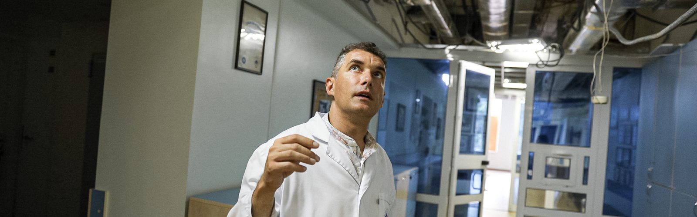
How the Center for Pediatric Cardiology and Cardiac Surgery is Recovering After the Russian Attack
15.08.24
On the morning of July 8, 2024, Russian forces launched a massive missile attack, firing aeroballistic, cruise, and guided aviation missiles at Kyiv, Dnipro, Kryvyi Rih, Sloviansk, Pokrovsk, and Kramatorsk. In Kyiv, one of the missiles struck a department of the National Children's Specialized Hospital "Okhmatdyt," where 627 children were staying at the time of the attack¹. The strike resulted in the death of two people and the destruction of a new hospital building. The same strike also damaged the Center for Pediatric Cardiology and Cardiac Surgery, which is located on the grounds of "Okhmatdyt" but belongs to the institutions of the Ministry of Health of Ukraine.
We spoke with Andriy Maksymenko, Medical Director of the State Scientific-Practical Medical Center for Pediatric Cardiology and Cardiac Surgery of the Ministry of Health of Ukraine, about the Center's work, the destruction caused by the missile strike, and the consequences for pediatric cardiology in Ukraine.
The Day of the Attack
When the missile attack began, I was heading from another building of the Center to the children's building on Chornovola Street. I arrived about three minutes after the explosion and immediately went to see where the missile had struck. I saw colleagues from "Okhmatdyt" evacuating patients from the danger zone and providing first aid.
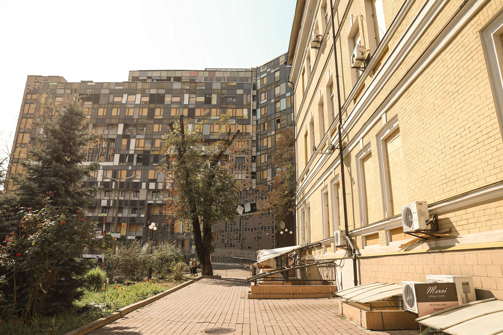
The explosion occurred 20 meters from our Center. The destruction was horrific. Even at the opposite end of the building from the explosion, where the windows remained intact, the office doors were blown out from the inside due to the powerful blast wave. But initially, we were more concerned about the lives of our patients and staff than the damage.
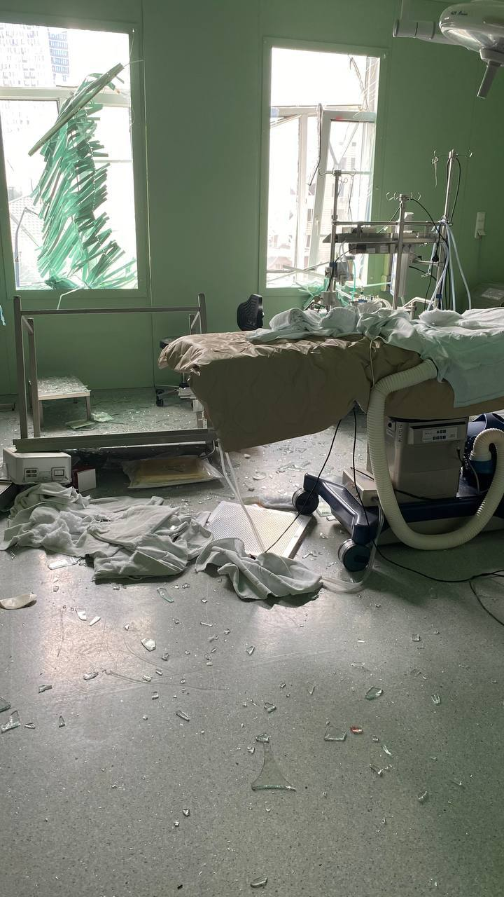
Damaged communications and the oxygen stored in the hospital could have led to another explosion. At that time, we didn't know the condition of the oxygen tanks, so to avoid taking any risks, we immediately began evacuating. In the first two hours, we evacuated 22 children from the cardiology department to other hospitals, 11 children from the intensive care unit, seven of whom were in critical condition and on ventilators, and two children from the operating rooms.
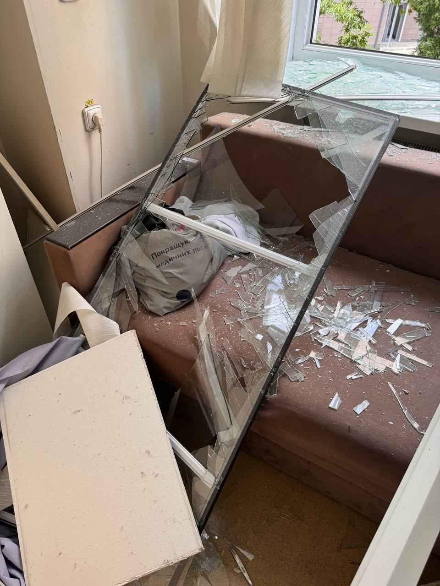
We were particularly worried about the children who were on the operating table at the time of the explosion. One of the girls, Varvara, already had her chest opened and was connected to a heart-lung machine. The surgeon quickly cleaned the wound, transferred the child to the intensive care unit, and closed the chest there. I lack the words to describe this terrorist attack on the hospital. This is genocide against the Ukrainian people.
Consequences
The missile strike severely damaged all five above-ground and attic floors of the Center. The most devastating for us was the destruction of the "heart" of our Center—the operating block and the entire pediatric hospital.
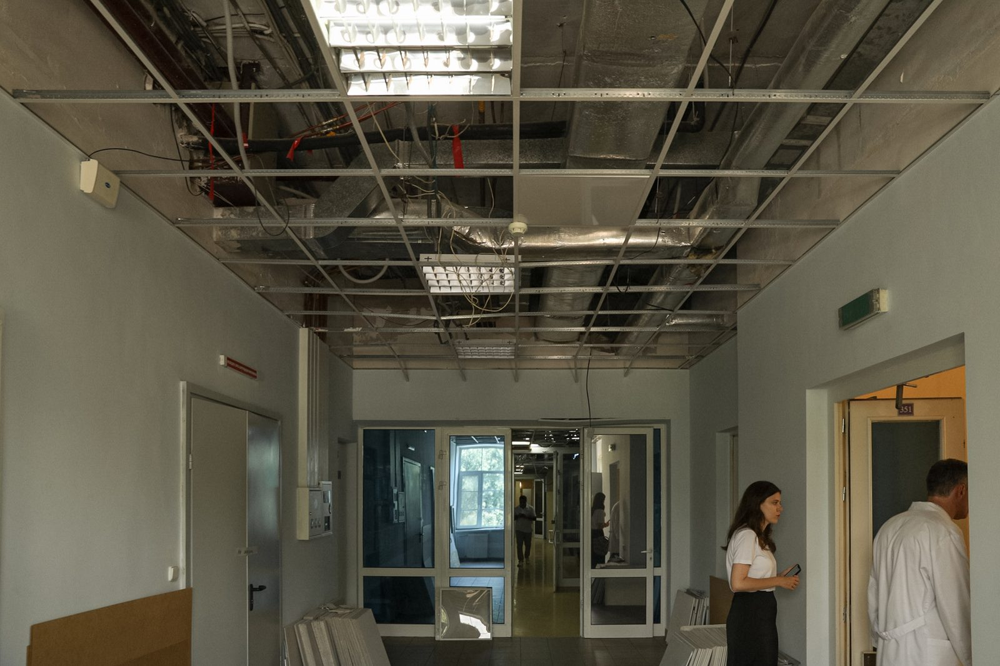
Fortunately, all the patients, their parents, and the hospital staff survived. The children and their parents, who were in the wards on the second floor, moved to the shelter when the air raid alarm sounded. However, the work in the operating rooms continued. Unfortunately, we cannot move patients who are already on the operating table to the shelter, as the risks of moving them exceed the risks of a missile strike. Therefore, people remained on the third floor—patients and doctors. Almost all of our staff who were in the hospital sustained some degree of injury, with cuts to their faces, arms, and legs. Surgeons and nurses used their bodies to protect the children on the operating table from glass shards.
When we first inspected the premises after the explosion, we thought we could hope for a quick resumption of operations. Windows and doors were blown out, and equipment was damaged, but all this could be restored. Later, we realized that the situation was much worse. The blast wave passed through the ventilation system, which provides air circulation, purification, and conditioning in the Center. The damage to the system was critical, and we are currently forced to seek resources for its replacement.
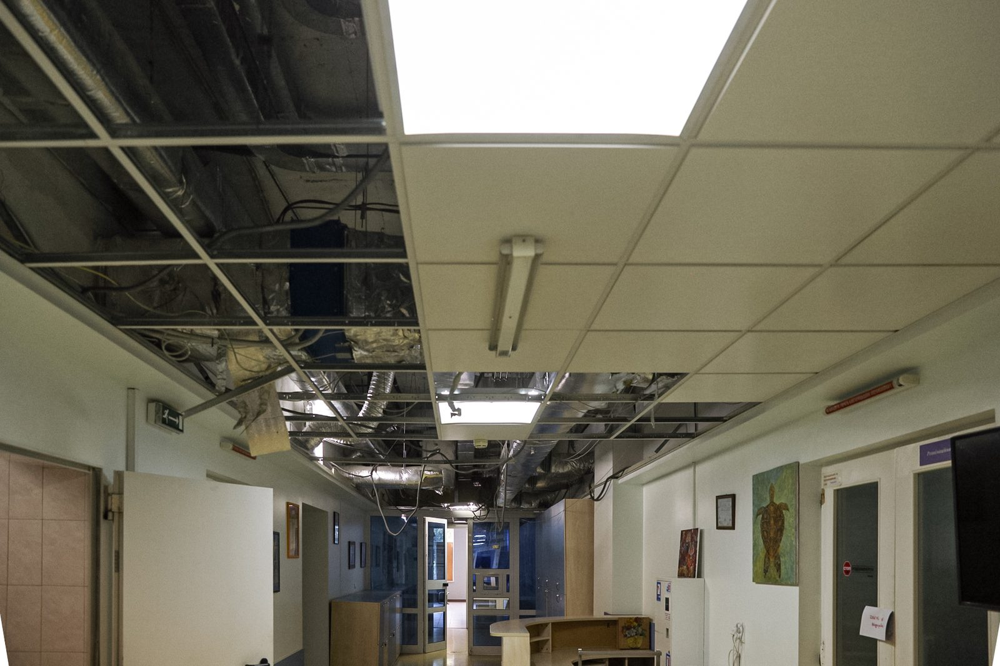
Ventilation in the hospital is not the same as in a residential building. Lives literally depend on it. The primary task of the ventilation system is to minimize the risk of infection spread. Imagine a patient lying on the operating table. The wound is open, the heart is exposed, doctors are administering hormonal drugs, and the body is cooled to 26 degrees. At this moment, the patient's immune system is weakened, and any infection can lead to catastrophic consequences. That's why the ventilation in operating rooms has its specifics. Only laminar airflow enters here, creating a slight positive pressure that prevents other air from entering. Even if someone opens the door, air does not enter the room; it only exits.
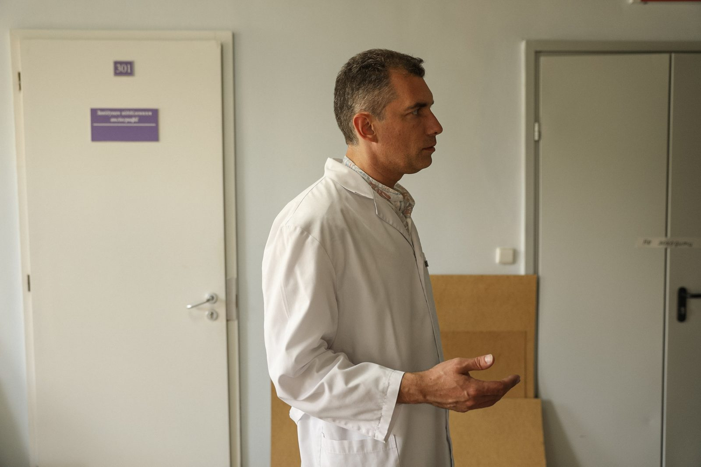
Ventilation also helps maintain optimal temperature in the hospital. Patients should not overheat or get too cold. During the preoperative period, this can provoke immune disorders or trigger chronic infections. Similarly, after surgery, when patients are in the intensive care unit—often newborns—temperature, humidity, and air cleanliness must be maintained.
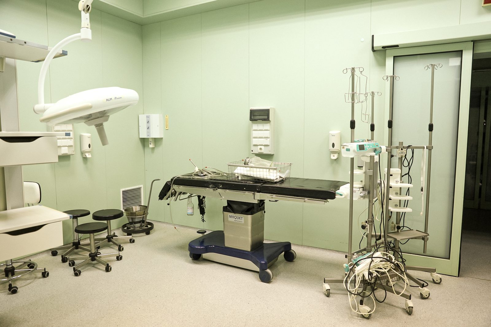
We cannot resume the work of the cardiac surgery department until we restore the ventilation system and isolation mechanisms that help seal the clean rooms. We could continue operating even without the damaged equipment. But without the ventilation system, it is impossible.
How the Center is Operating Now
The Cardiology and Cardiac Surgery Center has three buildings in total. Two buildings are located on Illienka Street: the first provides care for adults, and the second treats older children. The third building is located on the territory of "Okhmatdyt" and provides care for newborns and younger children. It was this building that was damaged during the missile attack.
Currently, we have transferred all patients from the building for the youngest children to the second building on Illienka Street. Our capacity has decreased by more than half, but we are working to ensure that every child can receive care.
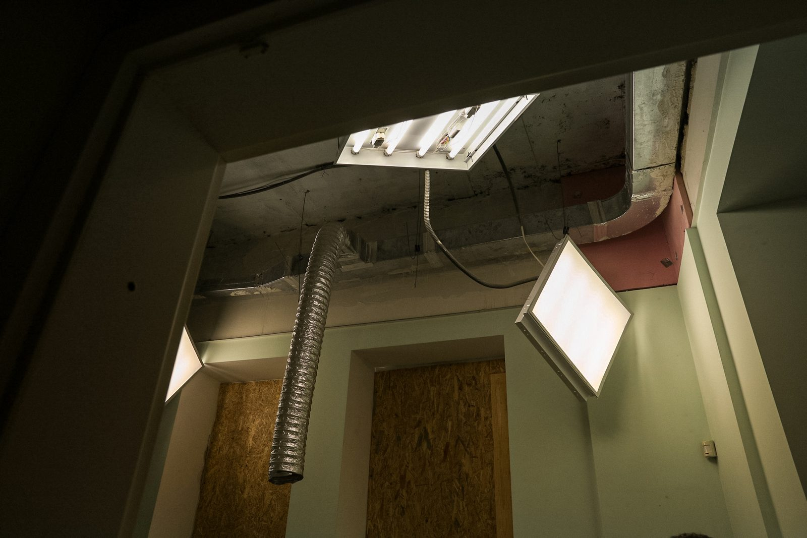
The destroyed building mainly housed newborns and infants with heart defects. Specialists at this facility performed many complex surgeries and were the first in Ukraine to conduct prenatal diagnosis of heart defects. We collaborate with the perinatal center and the fifth maternity hospital in Kyiv, performing diagnostics during pregnancy. Sometimes our doctors had to perform surgeries right in the maternity hospital, within minutes after the child's birth. This is necessary, for example, if a child has transposition of the great arteries. In this condition, the aorta and pulmonary artery are incorrectly positioned relative to each other and the heart chambers. Children with this defect receive insufficient oxygen, and without immediate surgical intervention, they can die. It so happened that in the two weeks following the missile attack, there were five such cases in a row.
How the War Affects Us
When the full-scale invasion began, our Center did not cease operations—staff literally lived in the hospital during the battles in Kyiv. We understood that we had the most extensive experience in Ukraine in providing care for children with heart defects. Even now, during the full-scale war, children from other countries are brought to us—at the time of the missile strike, there were three children from Moldova in the Center.
But the war still affects the number of patients and our ability to provide care. There are global statistics—about 9 out of 1,000 live births are children born with heart defects². Of these, one-third are patients with critical heart defects who need surgery within the first hours, sometimes minutes, of life. Another third must be operated on within the first year of life. Without surgical intervention, these children do not survive. In 2023, the birth rate in Ukraine decreased by 32%³. Accordingly, the number of children born with heart defects has also decreased. But the situation with treatment in the regions has also changed. Some doctors have left, and some are no longer able to provide consultative care. In fact, the diagnosis of cardiac pathology in children in the regions has deteriorated significantly.
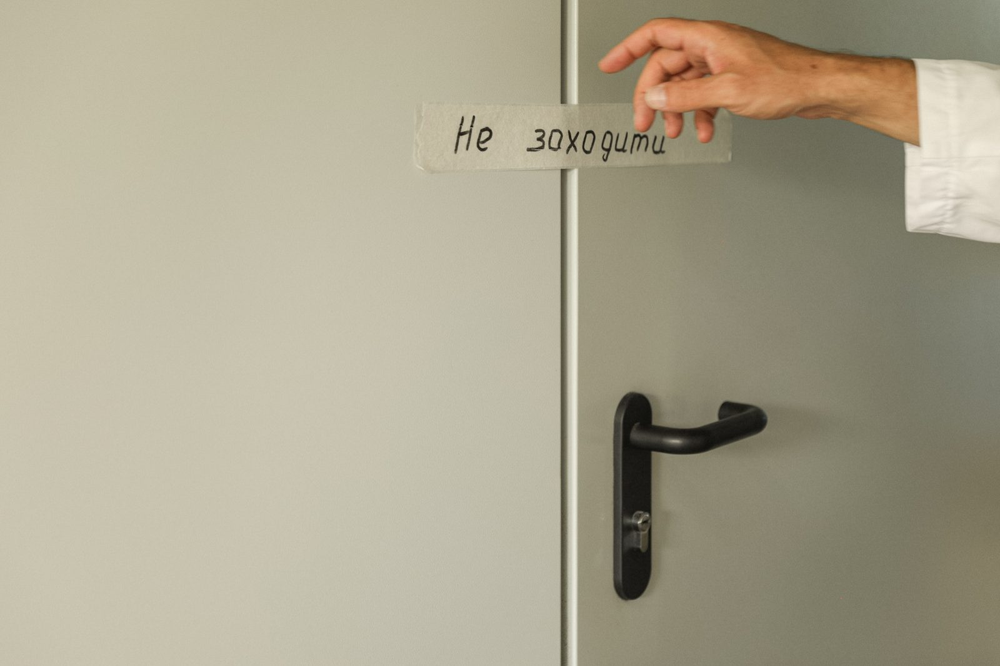
Our specialists organized a volunteer movement and traveled to de-occupied regions and regions near the front line to provide consultations and diagnoses for children. We decided not to wait for patients to be able to reach Kyiv, as in many cases, waiting worsens the prognosis for the child. Our doctors have consulted over 5,000 children in the eastern and southern regions, primarily in frontline and liberated settlements in Zaporizhzhia, Kherson, Donetsk, Luhansk, Chernihiv, Kyiv, and other oblasts. By the time of the missile strike, we had reached the number of surgeries we were performing in 2019. But after the missile attack, everything changed.
What is the Future of Pediatric Cardiac Surgery?
Restoring the center may take a long time, as rebuilding the ventilation system is costly and time-consuming. According to preliminary estimates, the repair of the premises and the restoration of engineering systems may take over six months. We cannot afford to lose so much time, so we need help. We are looking for sponsors and partners.
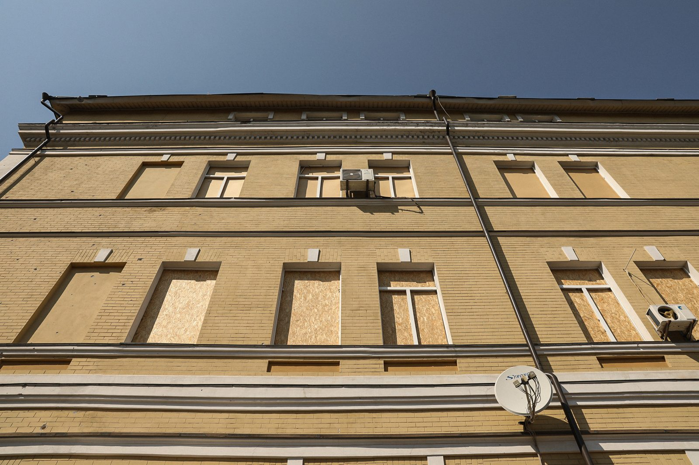
It is likely that we will not be able to restore the entire building at once. We will repair the premises and gradually move some services back there. For example, we could provide consultations or CT and MRI diagnostics. But to perform surgeries, we need to wait for the ventilation system to be repaired. And if this wait is prolonged, it will have very negative consequences.
Today, we are in a situation where pediatric cardiac surgery in Ukraine could collapse. Before the missile attack, our Center performed about 1,000 surgeries per year, and over 27,000 children received consultations. We have 30 years of experience that we have continuously improved through meticulous work and training. All of this was destroyed by a single missile strike.
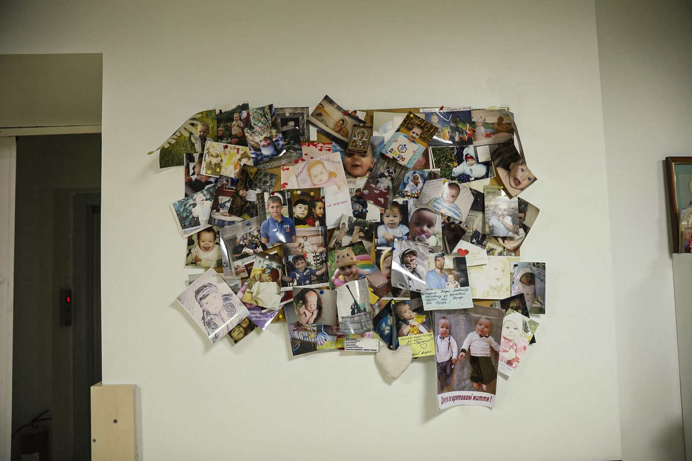
The problem is not only in the damaged building. The problem lies in the people who are the main resource of the Center. Our specialists did not stop working at the beginning of the full-scale war; they worked despite constant missile attacks. Today, after the devastating missile strike, we continued working in the second building, saving children with heart defects, despite fatigue, significant limitations, and heavy workloads. However, people's abilities are not limitless. It is difficult to predict how long specialists will be able to provide quality care under these conditions. If someone decides to leave, it will be a big problem, as it takes decades to train highly qualified specialists. Therefore, our main task is to retain the hospital staff.
One of the key factors in retaining specialists is the quickest possible restoration of the Center. Then doctors and medical staff will be able to continue helping the children who need it.
You can join and support the Center for Pediatric Cardiology and Cardiac Surgery by following the link.